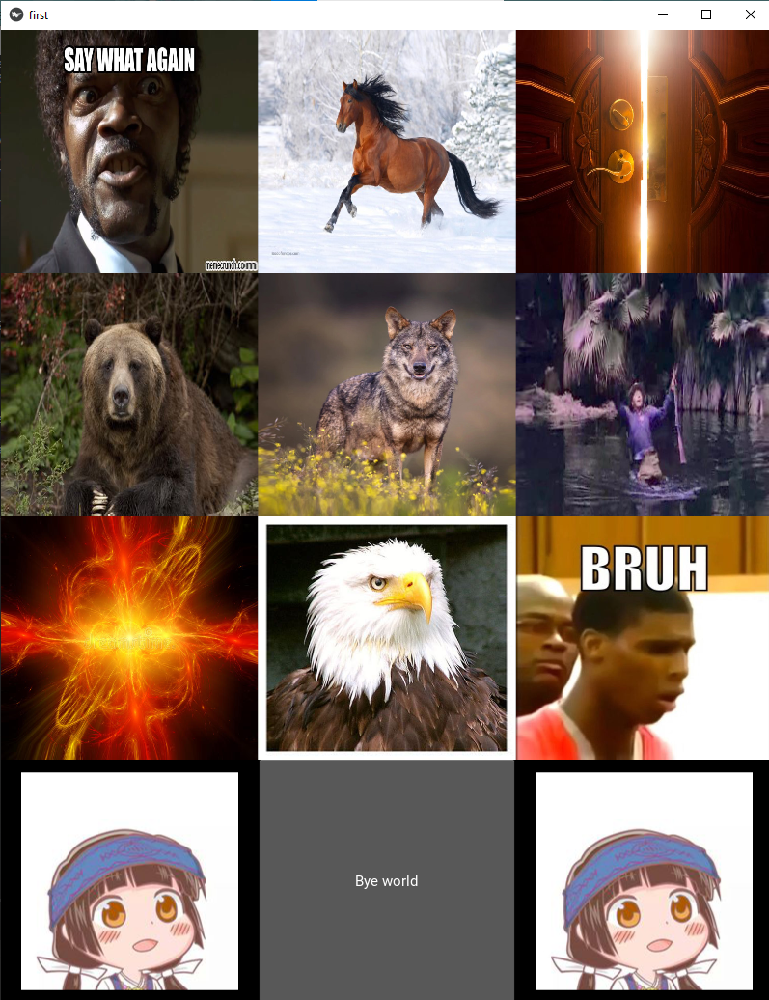

Very Usefull Sound Board
Nuestra aplicación podrá reproducir sonidos los cuales te permitirán entretener a tus amigos o inclusive usarlos para cuando relatas una historia. Podrás descagarla si vas al siguiente link
Si deseas ver el codigo fuente puedes presionar este boton

Nuestra Tabla de sonido es muy limitada, pero pronto conseguiremos mas ruidos iconicos, y, además contamos con sonido muy histericos como "Bruh" o el grito de willhelm,
como tambien ruidos más practicos como el sonido de puerta y de varios animales